操作指南（面向翻译）
MadCap Flare
目录 {#目录 .TOC-Heading}
4.1 编辑Topic内容 [14](#编辑topic内容)
7.1 设置Primary Target [28](#设置primary-target)
7.2 查看Primary Target设置 [28](#查看primary-target设置)
7.3 设置Master TOC [29](#设置master-toc)
9. 常用格式的 XML 代码 [38](#常用格式的-xml-代码)
前言
本文档主要介绍MadCap Flare软件的基本操作，旨在帮助资料部同事输出网管产品的联机帮助、操作指南。
文档概览
文档目的
本指南主要介绍MadCap Flare软件的基本概念、相关操作、常见问题，方便不熟悉该软件的同事迅速了解软件的常用操作，提高系统产品相关的工作效率。
目标读者
本指南的主要读者是英文技术写作、翻译、审校人员。
适用范围
本指南主要适用于网管产品的联机帮助、操作指南、产品概述等产品资料。
基本概念
MadCap Flare 是一款专为技术写作开发的同源写作软件，旨在将文档切分为单个模块，以维护单个模块的方式维护整个文档，最大限度地重复使用内容，并输出到多个渠道。
在翻译组的系统产品维护工作中，主要涉及该软件的以下几个概念。
Topic
Topic相当于文档中的小节，包含了针对某个对象、话题的信息。
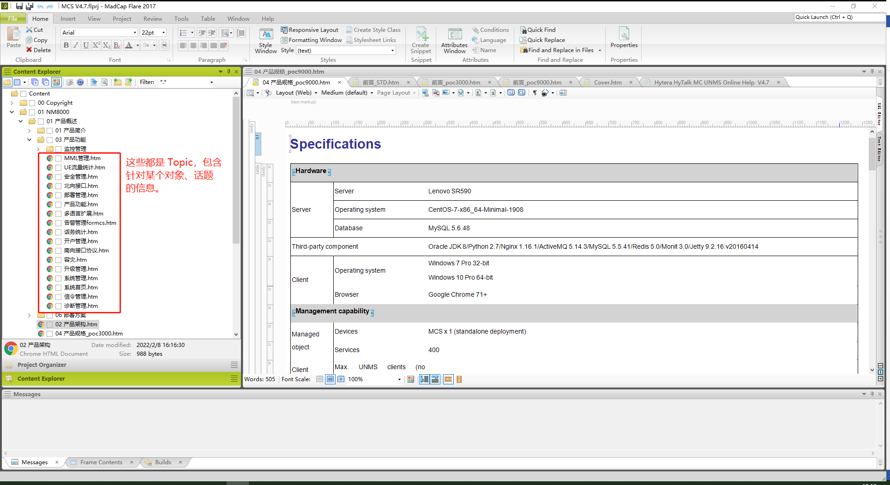
{width="6.845833333333333in" height="3.7381944444444444in"}Target
Target是最终输出的文件，由多个Topic组成。
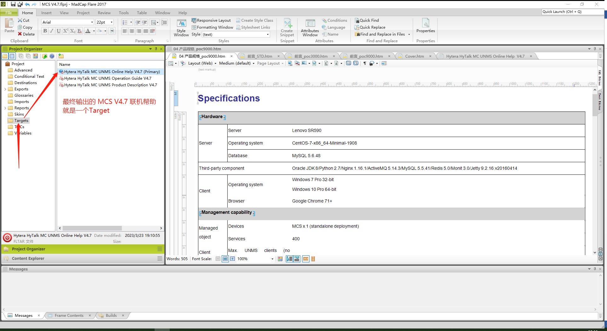
{width="6.845833333333333in" height="3.7381944444444444in"}TOC
TOC（Table of Content）是Target的目录文件。
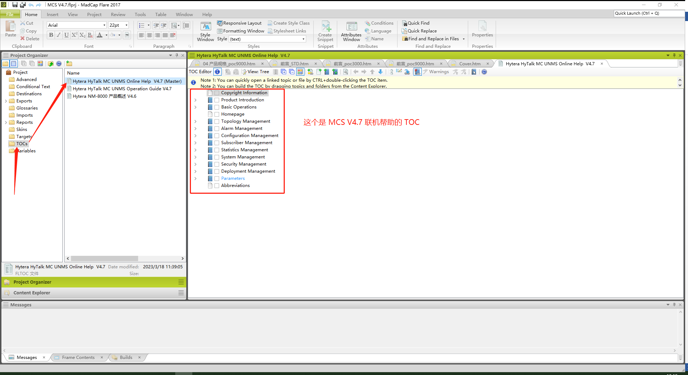
{width="6.845833333333333in" height="3.7381944444444444in"}Snippet
Snippet包含了一个Flare项目在不同渠道能多次利用的内容，可包括文字、图片、表格等。
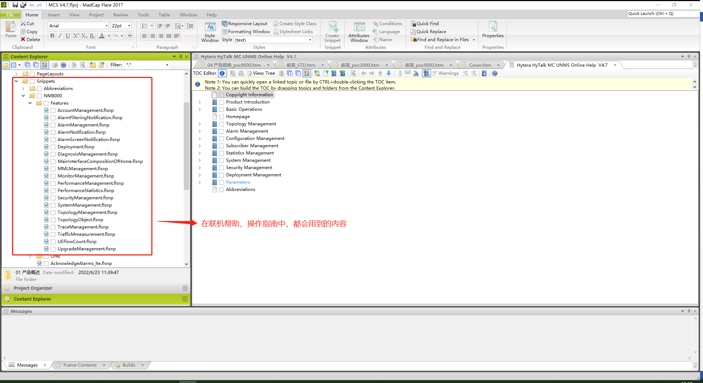
{width="6.845833333333333in" height="3.7381944444444444in"}Text Editor
Text Editor显示该页面的具体内容，如文字、图片、表格。
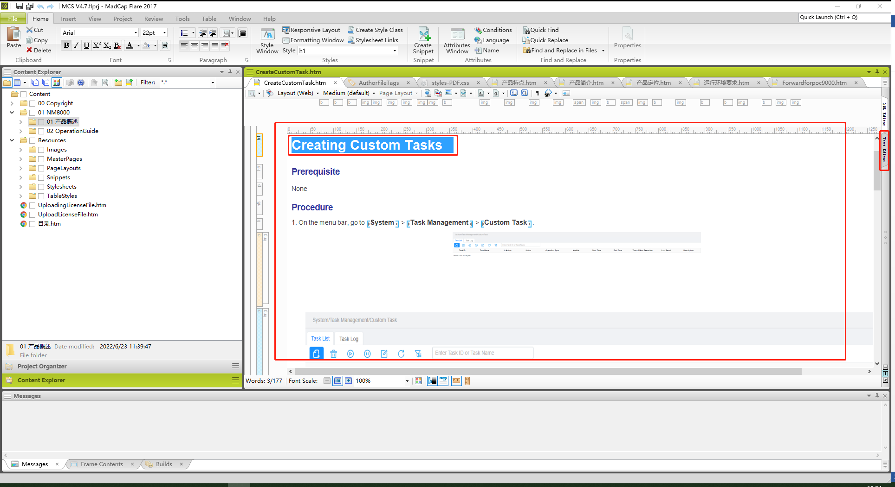
{width="6.845833333333333in" height="3.7381944444444444in"}XML Editor
XML Editor显示该页面内容的代码信息。
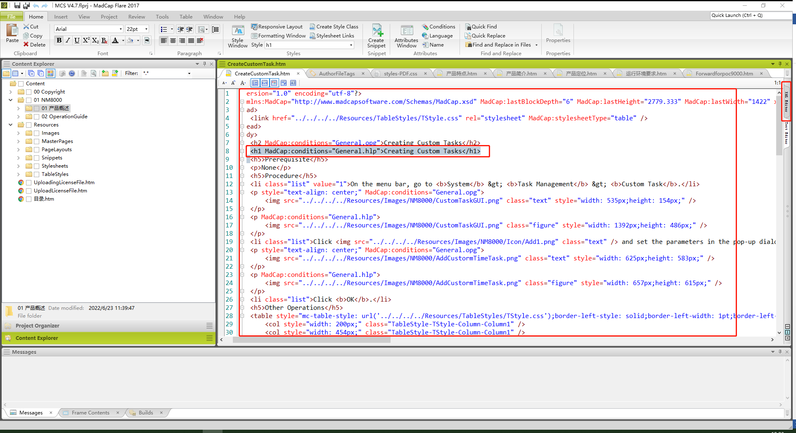
{width="6.845833333333333in" height="3.7381944444444444in"}工作流程
- 更新文档（多数）
a. 打开 Flare 文件。
i. 在 SVN 找到上个版本的 Flare 压缩文件包，拖拽保存到本地。
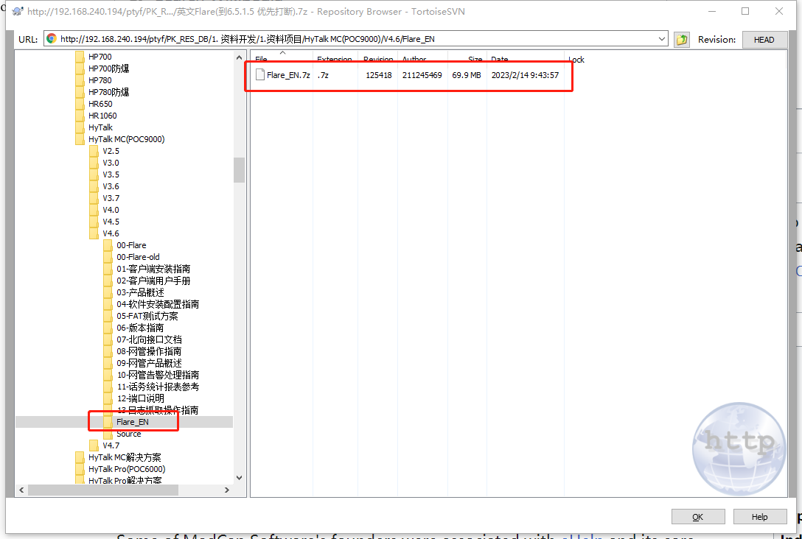
{width="6.845833333333333in" height="4.6in"}+-----------------------------------------------------------------------+
| 
ii. 解压文件包。
解压后，文件夹一般包含
"Analyzer"，"Content"，"Filesync"，"Output"，"Project"文件夹及
.FLPRJ 文件。
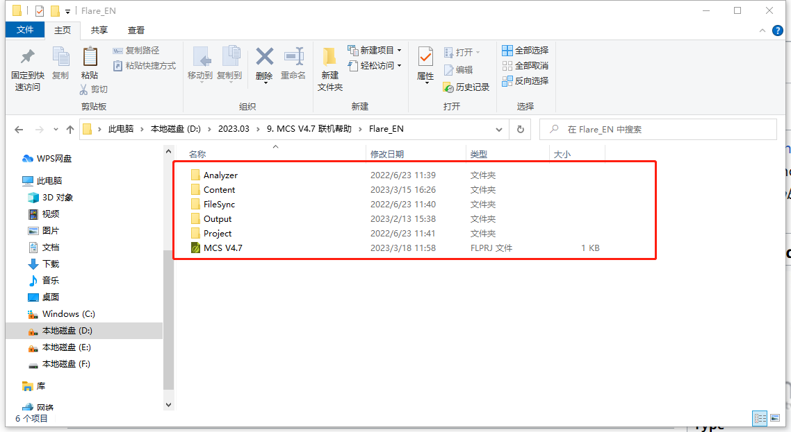
{width="6.8381944444444445in" height="3.745833333333333in"}iii. 双击打开 .FLPRJ 文件。
iv. （可选）如果打开文件后，系统弹出"New Updates Available"对话框，单击"Cancel"。
b. 对照中文的修改记录，完成英文 Flare 文件的更新。
c. 发布文件。
d. []{#交付文件 .anchor}交付文件。打开"Flare 本地文件夹 > Output > 工号文件夹 > 交付文件所在文件夹"。
- 如果交付操作指南、产品概述，将 .pdf 文件发给需求人即可。
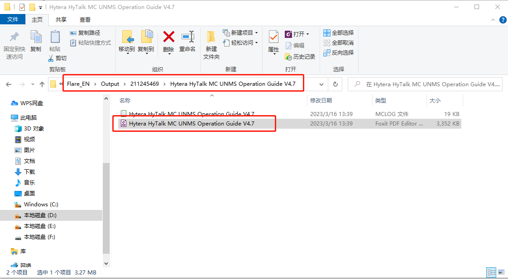
{width="6.8381944444444445in" height="3.7694444444444444in"}- 如果交付联机帮助，先将整个联机帮助文件夹压缩打包，再发给需求人。
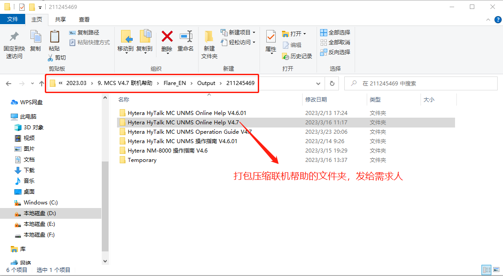
{width="6.8381944444444445in" height="3.754166666666667in"}- 制作全新文档
直接用中文 Flare 文件修改，省去调整格式的时间。
a. 将中文 Flare 文件拖拽保存到本地。
a. 打开中文Flare 文件，另存为英文 Flare 文件。
b. 修改内容后交付（步骤和要求同更新文档，参考 交付文件）。
文字相关操作
编辑Topic内容
使用场景
根据中文修订记录，需要增删某个Topic的文字内容。
步骤
-
打开要修订的Topic。
-
将光标定位到需要编辑的地方后，即可增删文字。
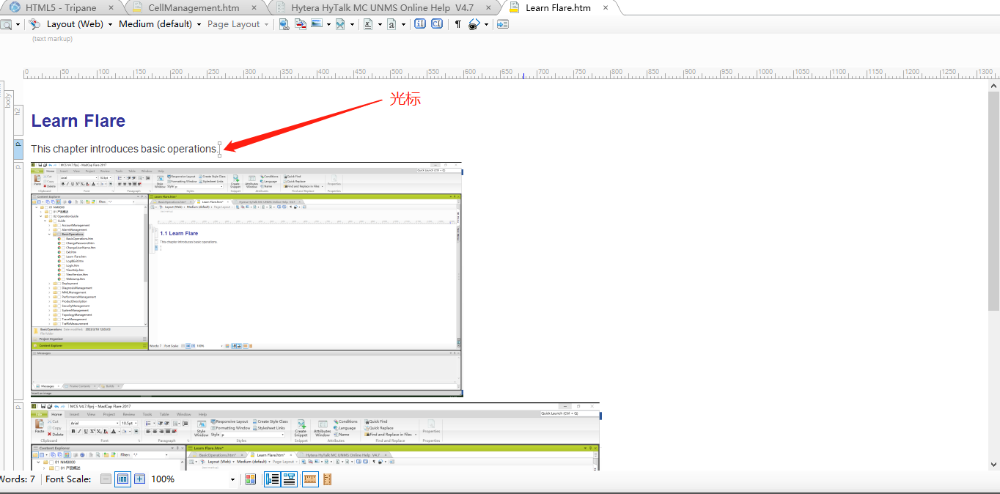
{width="5.769444444444445in" height="2.8381944444444445in"}+-----------------------------------------------------------------------+
| 
添加新的Topic
使用场景
若此次修订中需要增加新的小节，则需要添加Topic。
以给"BasicOperations"一章添加名为"Learn Flare"的topic为例。
步骤
-
单击"Project Organizer > TOCs"。
-
双击文件名，打开文件目录。
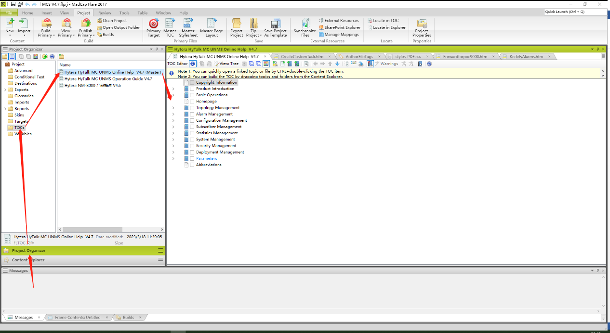
{width="5.761805555555555in" height="3.1458333333333335in"}-
右键单击一级标题，选择"Add New Topic..."。
-
单击"Folder"后面的{width="0.2847222222222222in" height="0.2152777777777778in"}。
-
在"Select Folder"对话框中，选择一级标题文件夹（"BasicOperations"），单击"OK"。
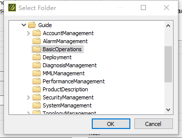
{width="3.7847222222222223in" height="2.8694444444444445in"}-
在"File Name:"对话框输入topic的标题（"Learn Flare"）。
-
单击"Add"。
系统自动打开并停留在"Learn Flare"页面。
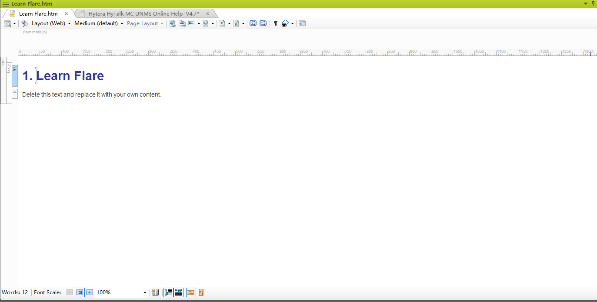
{width="5.361805555555556in" height="2.722916666666667in"}- 点击{width="0.26180555555555557in" height="0.22291666666666668in"}，保存更改。
打开跳转页面
使用场景
联机帮助中，每个章节的首页都有本章二级标题的跳转链接汇总。可点击跳转链接到某个页面，再做修改。比如，以下页面的蓝色字体均为跳转到其他页面的超链接。要打开"Introduction"页面，按住【Ctrl】键，同时单击"Introduction".
步骤
按住Ctrl键，单击页面标题（蓝色字体）
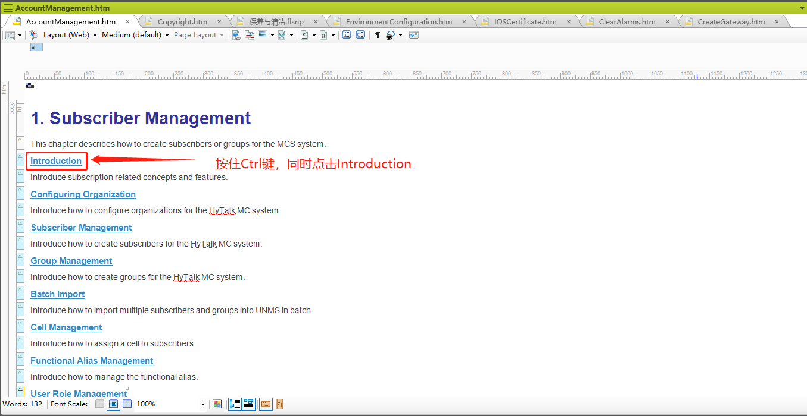
{width="5.645833333333333in" height="2.915277777777778in"}添加超链接
使用场景
各个一级标题下，有一个topic用于跳转到二级标题的页面。
比如，在"Basic Operations"页面添加"Learn Flare"页面的跳转链接。
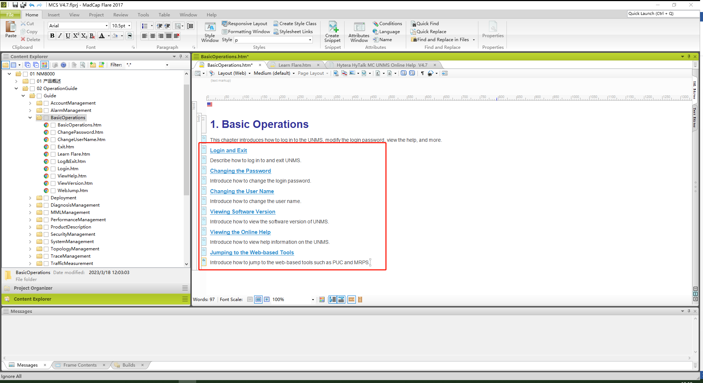
{width="5.761805555555555in" height="3.1458333333333335in"}步骤
-
插入Learn Flare标题
-
复制粘贴
i. 复制已有topic的标题和简介，粘贴到适当位置。
ii. 将topic标题改为"Learn Flare"，修改简介。
iii. 右键单击"Learn Flare"，选择"Edit Hyperlink"。
- 直接输入
i. 在适当位置输入"Learn Flare"与简介。
ii. 选中"Learn Flare"后，单击右键。
iii. 选择"Insert > Hyperlink"。
-
在"Insert Hyperlink"对话框中，选择"Learn Flare"。
-
单击"OK"。
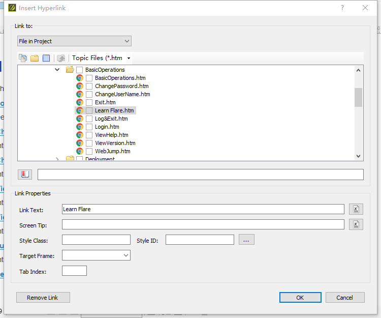
{width="5.761805555555555in" height="4.815277777777778in"}设置发布格式
使用场景
发布到联机帮助与操作指南的内容可能有出入。编辑Topic时，需要选择内容发布到哪种格式。
步骤
- 右键单击要修改的内容，选择"Conditions..."。
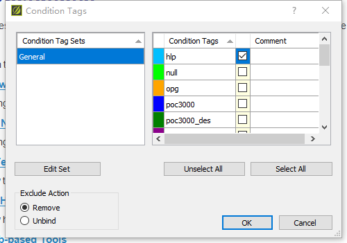
{width="5.207638888888889in" height="3.6618055555555555in"}-
选择输出格式。
-
勾选"hlp"，内容输出到联机帮助。
-
勾选"opg"，内容输出到操作指南。
-
单击"OK"。
打开拼写检查
-
选择"Projects > Project Properties"。
-
点击"Language"。
-
选中"English (United States)"，点击"OK"。
-
选择"Tools"。
-
勾选"Spell check while typing\"。
-
重启项目，更改生效。
图片相关操作
添加图片到resources文件夹
使用场景
网管的联机帮助和操作指南基本每个步骤都要配图。插入的图片多为页面截图。
以用企业微信截图为例。
步骤
-
用企业微信截图。
-
右键单击截图，给图片命名，保存到非加密盘（一般为F盘）。
-
在沙盒中打开非加密盘。
-
将该图片复制粘贴到"resources"文件夹下对应的文件夹内。
添加新图片
使用场景
系统有了新功能，需要在新的topic中加入配图。
步骤
-
将光标定位在插入图片的位置。
-
单击{width="0.26944444444444443in" height="0.19236111111111112in"}。
-
在"Insert Image"对话框中，选择"Resources > Images".
-
在相应文件夹中选择要插入的图片，点击"OK"。
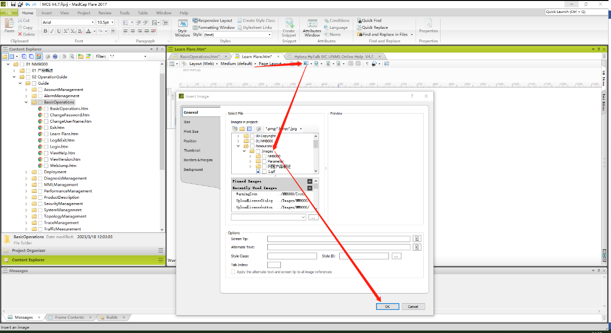
{width="5.761805555555555in" height="3.1458333333333335in"}更换截图
使用场景
系统页面更新后，需要更换操作步骤的配图。
以用企业微信截图为例
步骤
-
查看旧截图的文件夹位置。
a. 选中旧截图。
b. 点击"Text Editor"。
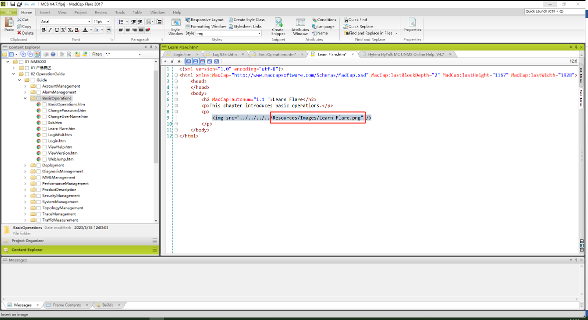
{alt="企业微信截图_16791212873167" width="5.3381944444444445in" height="2.907638888888889in"}-
复制图片名（"Learn Flare"）。
-
用企业微信截取系统新页面，命名时可粘贴图片名（"Learn Flare"），保存到非加密盘。
-
将非机密盘的图片粘贴到"Resources"下旧截图所在的文件夹。
-
在弹出的提示框中，单击"替换目标中的文件"。
页面的配图将自动替换为新截图。
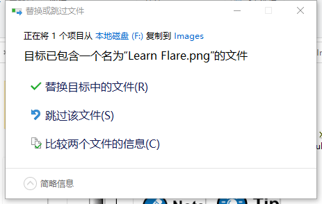
{width="4.822916666666667in" height="3.0694444444444446in"}更改图片大小
使用场景
插图图片后，需要根据输出格式更改图片大小。
步骤
-
选中图片。
-
将鼠标悬停在图片右下角。
-
选中图片光标，更改图片大小。
+-----------------------------------------------------------------------+
|
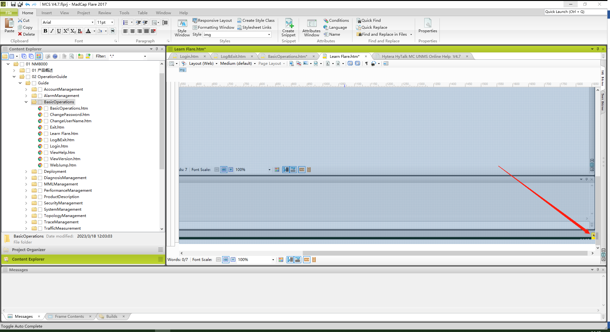
{width="5.761805555555555in" height="3.1458333333333335in"}更改图片位置
使用场景
插图图片后，需要根据输出格式更改图片位置。
步骤
-
选中图片。
-
单击"Home"页签，选择图片位置。
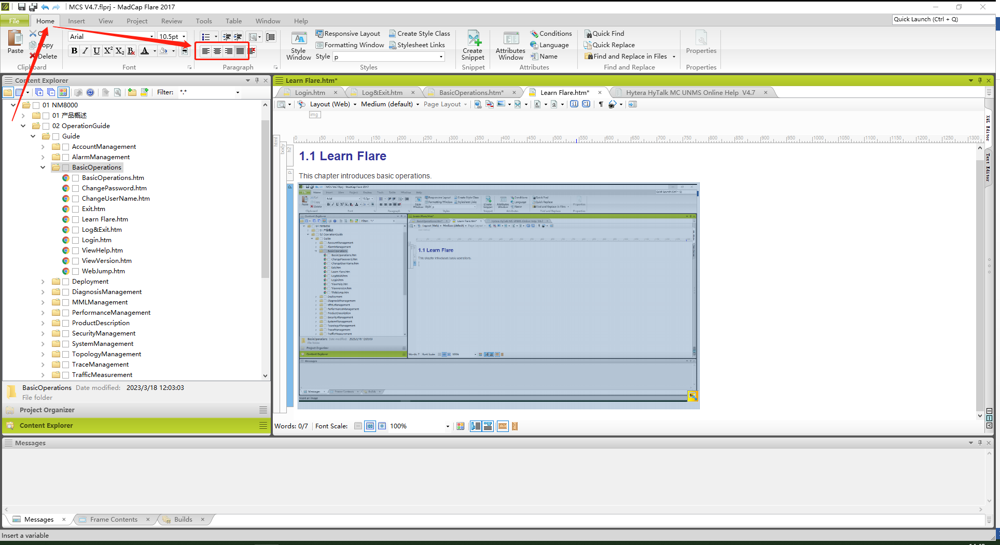
{width="5.761805555555555in" height="3.1458333333333335in"}设置发布格式
表格相关操作
插入行或列
使用场景
修改后续操作、参数表格时，常需插入新的行或列。
以插入行为例。
步骤
-
右键单击选中表格中的某行。
-
选择"Insert"。
-
根据需求选择新行或新列的位置。
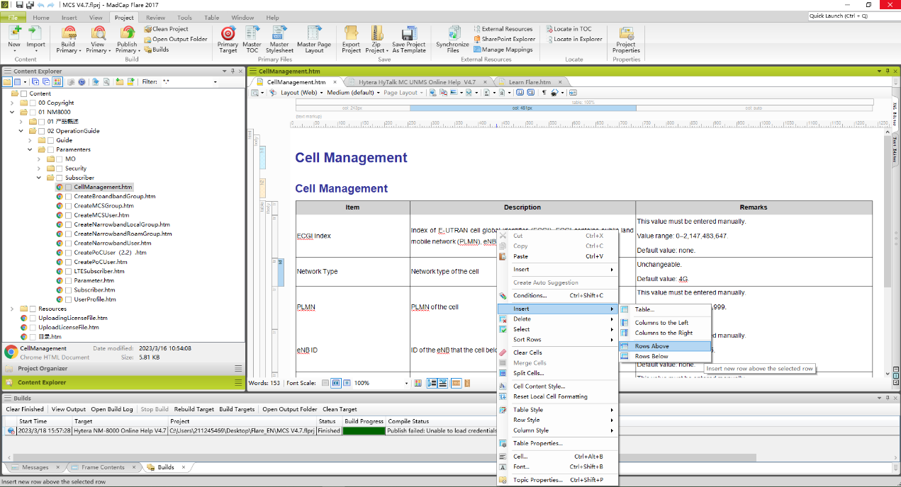
{width="5.777083333333334in" height="3.1305555555555555in"}删除行或列
使用场景
修改后续操作、参数表格时，常需删除行或列。
以删除行为例。
步骤
-
右键选中表格中的某行。
-
选择"Delete"。
-
根据需求选择删除行或列的位置。
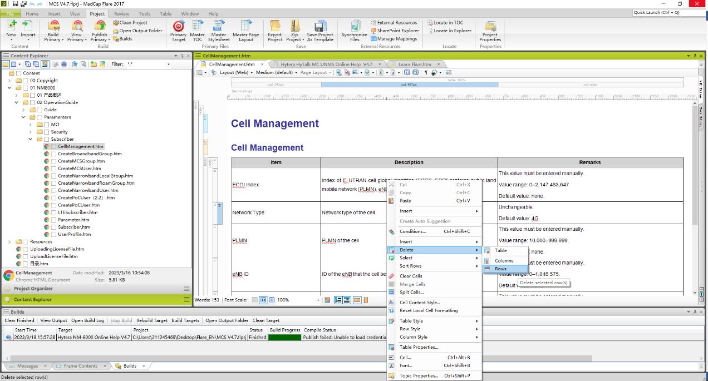
{width="5.777083333333334in" height="3.1152777777777776in"}发布相关操作
设置Primary Target
使用场景
发布内容前，需先将文件设置为Primary Target。
步骤
-
单击"Project Organizer > Targets"。
-
右键选择发布文件，选择"Make Primary"。
查看Primary Target设置
-
单击"Project"。
-
双击"Primary Target"。
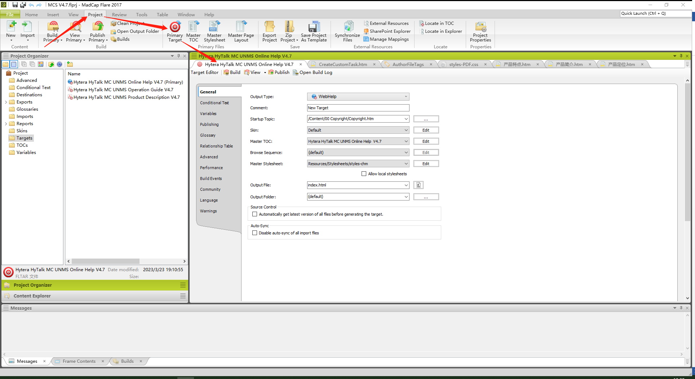
{width="6.845833333333333in" height="3.7381944444444444in"}设置Master TOC
使用场景
发布内容前，需先将文件的TOC设置为Master TOC。
步骤
-
单击"Project Organizer > TOCs"。
-
右键选择发布文件，选择"Make Master TOC"。
查看Master TOC设置
-
单击"Project"。
-
双击"Master TOC"。
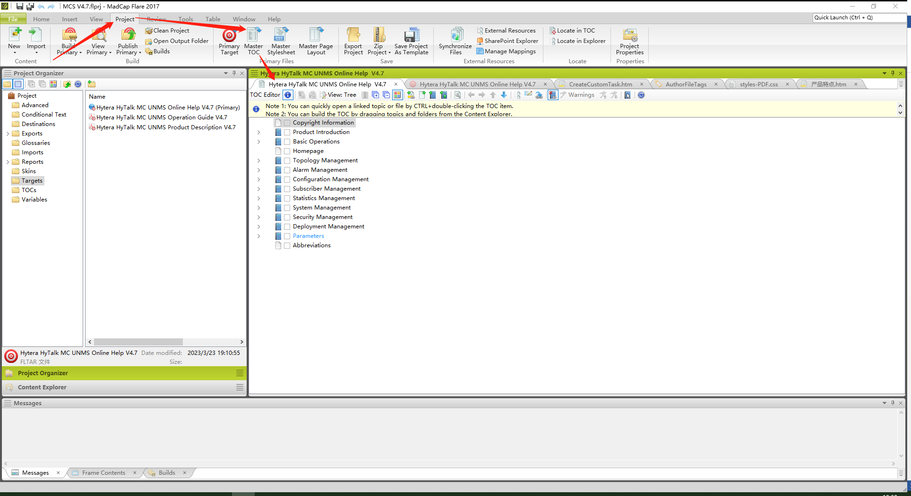
{width="6.845833333333333in" height="3.7381944444444444in"}改变章节顺序
使用场景
文档更新后，改变了原有章节的顺序。
步骤
-
单击"Project Organizer > TOCs"。
-
双击打开要修改的TOC文件。
-
选中要移动的小节，拖动到适当的位置。
预览发布内容
使用场景
文件修订完成后，预览文件输出效果。
步骤
-
单击"Project > View Primary"。
-
(可选) 如果想要预览其他文件的输出效果，点击"View Primary"右下角的三角，选择要预览的文件。
删除公司logo
使用场景
有些项目需要删除文档里的公司logo。
步骤
-
单击"Project Organizer > Skins"。
-
双击打开"HTML5 - Tripane"。
-
选择"Styles > Logo > Background"。
-
在"Image"的下拉菜单中，选择"none"。
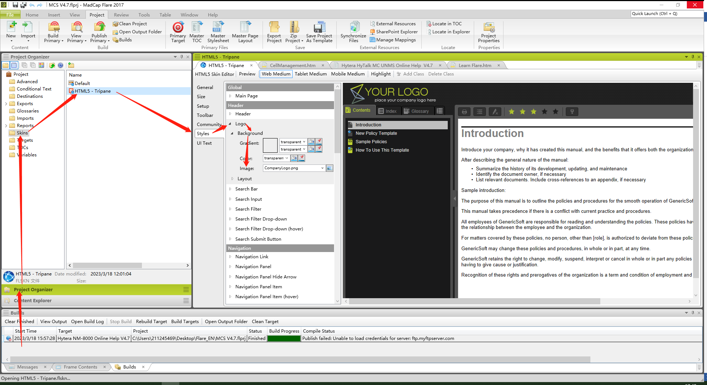
{width="6.845833333333333in" height="3.7381944444444444in"}- 单击{width="0.26180555555555557in" height="0.22291666666666668in"}，保存更改。
保存
-
单击{width="0.26944444444444443in" height="0.22291666666666668in"}保存当前页面的修改内容
-
单击{width="0.26180555555555557in" height="0.22291666666666668in"}保存所有页面的修改内容
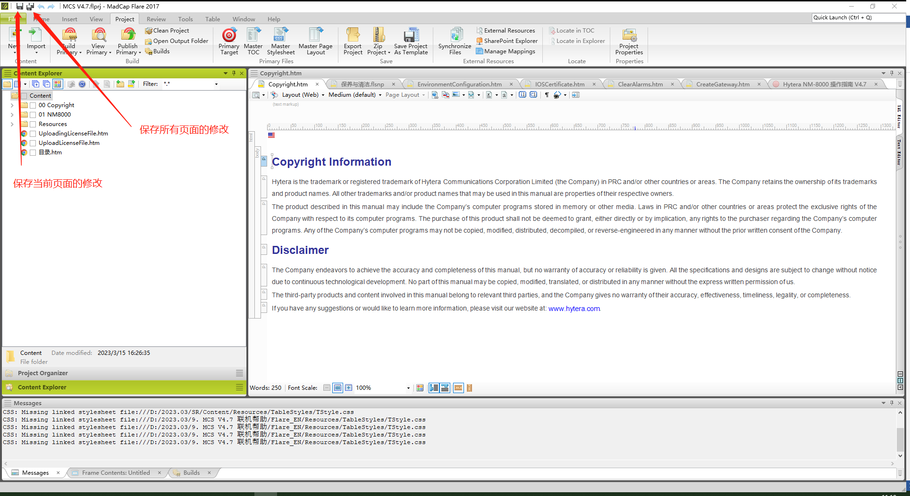
{width="5.761805555555555in" height="3.1458333333333335in"}发布文件
使用场景
文件修订完成后，按需求输出交付文件。
步骤
-
点击"Project Organizer"。
-
把发布文件设置为Primary Target。参考7.1 设置Primary Target。
-
把发布内容的TOC设置为Master TOC。参考7.3 设置Master TOC。
-
单击"Project > Publish Primary"。
-
在"MadCap Flare 2017"对话框中，选择"是"。
-
（可选）双击发布状态栏的任一位置可打开文件。
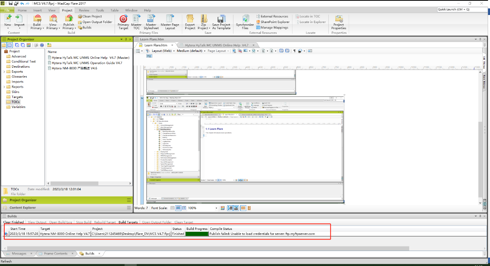
{alt="企业微信截图_16791271212946" width="5.761805555555555in" height="3.1458333333333335in"}
"Status"为"Finished"则输出成功。"Compile Status"里的"Publish failed:..."不用理会。
常见问题
+------------------------------+--------------------------------------------------------------+--------------------------------------------------------------------------------------------------------------------------------+ | 现象 | 原因 | 解决方法 | +==============================+==============================================================+================================================================================================================================+ | []{#内容无法编辑 | 要编辑的内容实际属于另一个Topic（一般在"Snippet"文件夹下）。 | 1. 点击无法编辑内容左边的"MadCap:snippetBlock"，选中该段内容. | | .anchor}Topic的内容无法编辑 | | | | | |
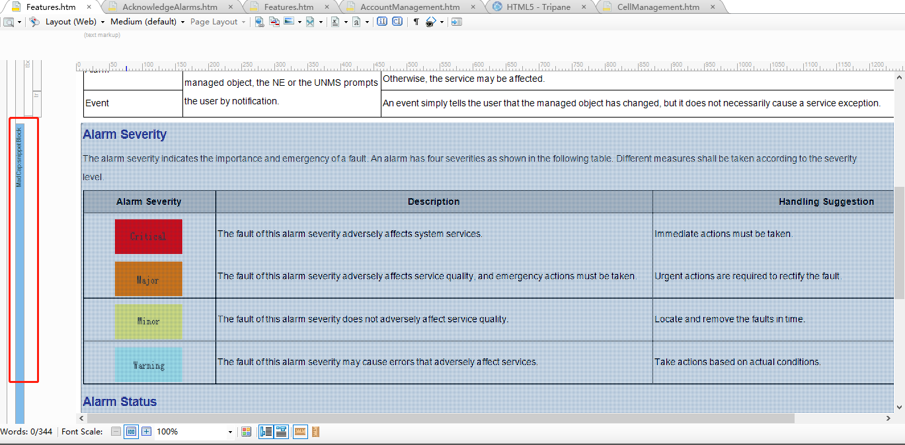
{width="4.061805555555556in" height="2.0in"} | | | | | | | | 2. 切换到"XML Editor"页面。参考2.5 | | | | | | | | 3. | | | | | | | | Text EditorText | | | | Editor显示该页面的具体内容，如文字、图片、表格。{width="6.845833333333333in" | | | | height="3.7381944444444444in"} | | | | | | | | 4. XML Editor。 | | | | | | | | 5. 查看该段内容实际所属Topic的路径。 | | | | | | | |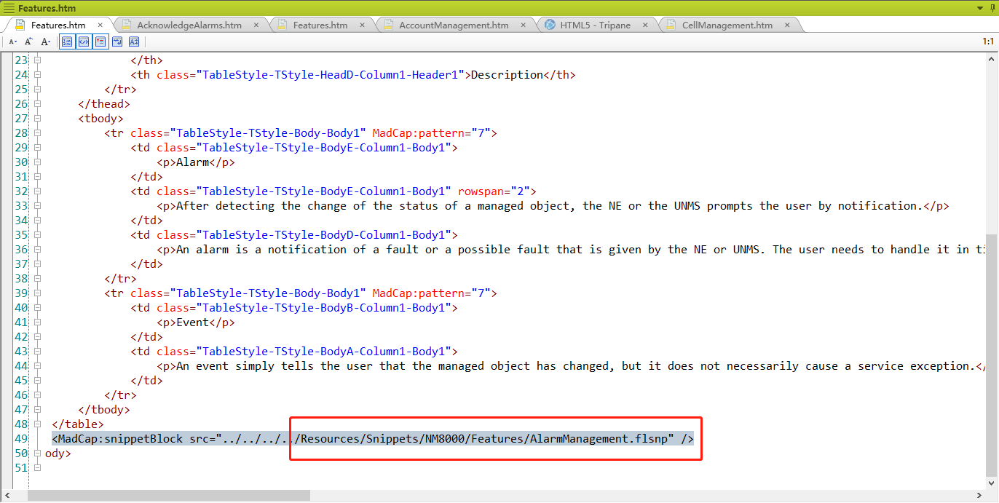
{width="4.061805555555556in" height="2.0381944444444446in"} | | | | | | | | 6. 按路径找到并打开正确的Topic。 | | | | | | | | 7. 修改内容。 | +------------------------------+--------------------------------------------------------------+--------------------------------------------------------------------------------------------------------------------------------+ | 图片变形 | 图片被压缩 | 1. 选中图片。 | | | | | | | | | | | | | | | | 8. 右键选择"Reset Size"。 | | | | | | | | 9. 重新调整图片大小。参考5.4 更改图片大小。 | +------------------------------+--------------------------------------------------------------+--------------------------------------------------------------------------------------------------------------------------------+ | 操作指南中出现联机帮助的内容 | 内容的Condition设置不正确 | 重新设置内容的Condition。参考4.5 设置发布格式。 | +------------------------------+--------------------------------------------------------------+--------------------------------------------------------------------------------------------------------------------------------+ | 导出失败 | 导出文件夹的路径太复杂 | 更改文件的发布位置，比如发布到桌面。 | | +--------------------------------------------------------------+--------------------------------------------------------------------------------------------------------------------------------+ | | 文件代码有误 | 1. 根据错误提示定位并打开错误页面。 | | | | | | | | | | | | | | | | 10. 对照中文Flare文件修改代码，或把中文页面复制过来，把中文修改为英文。 | +------------------------------+--------------------------------------------------------------+--------------------------------------------------------------------------------------------------------------------------------+常用格式的 XML 代码
格式 代码
一级ul \<ul class=\"ul1\">\<span style=\"font-family: \'Wingdings\'\">l \</span>content content content\</ul>
二级ul \<ul class=\"ul2\" style=\"margin-left: 1.0ch;\">\<span style=\"font-family: \'Wingdings 3\'\"> \</span>content content content\</ul>
相关资料
相关资料 SVN地址
Flare入门.pptx http://192.168.240.194/ptyf/PK_RES_DB/1. 资料开发/3.平台工作/5.培训及分享/Flare-面向翻译/Flare入门.pptx
Flare使用总结.docx http://192.168.240.194/ptyf/PK_RES_DB/1. 资料开发/3.平台工作/5.培训及分享/Flare/Flare使用总结.docx
Flare基本操作介绍.pptx http://192.168.240.194/ptyf/PK_RES_DB/1. 资料开发/3.平台工作/5.培训及分享/Flare/Flare基本操作介绍.pptx